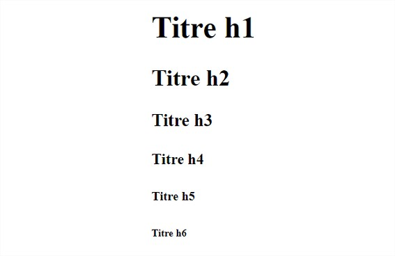
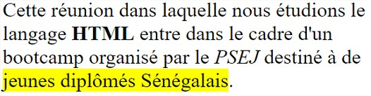
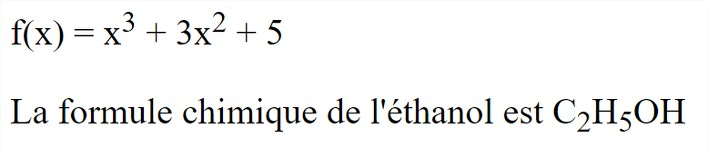
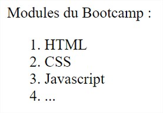
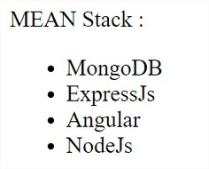
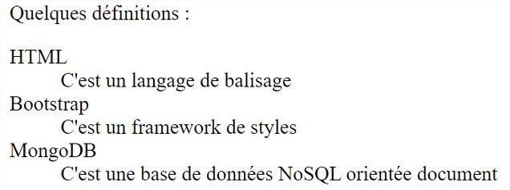

Les balises HTML
Les balises peuvent avoir plusieurs formes :
-
<balise> </balise> : elles s'ouvrent et se ferment
pour délimiter le contenu
-
<balise /> : balises orphelines, elles permettent d'insérer
un élément à un endroit précis (par exemple un retour à la ligne,
une image...).
Les balises block et inline
La plupart des balises peuvent se ranger dans l'une ou l'autre de deux catégories :
-
block : Une balise de type block sur votre page web crée automatiquement un retour à la
ligne
avant et après.
-
inline : Une balise de type inline se trouve obligatoirement à l'intérieur d'une balise
block.
Une balise inline ne crée pas de retour à la ligne.
Les balises <Hx>
Les balises h1, h2, h3, h4, h5 et h6 servent à renseigner les titres
d'un document de manière hiérarchisée
Les balises <Hx> (suite)
-
<h1> </h1> : signifie « titre très important ». En
général, on s'en sert pour afficher le titre de la page au début
de celle-ci.
- <h2> </h2> : signifie « titre important ».
-
<h3> </h3> : pareil, c'est un titre un peu moins
important (on peut dire un « sous-titre » si vous voulez)
- <h4> </h4> : titre encore moins important.
- <h5> </h5> : titre pas important.
-
<h6> </h6> : titre vraiment, mais alors là vraiment
pas important du tout
Les balises <Hx> (suite)

La balise <p>
C'est une balise permettant de contenir un paragraphe.
Les balises de mise en évidence <b> et <strong>
Elles définissent la police en gras.
-
La balise <b> est une balise de balisage physique qui met en évidence le texte sans accentuer son
importance.
-
La balise <strong> identifie le texte qui revêt une importance particulière.
Le contenu de la balise a beaucoup de poids pour les moteurs de recherche.
Les balises de mise en évidence <i> et <em>
Elles définissent la police en italique.
-
La balise <i> est une balise de balisage physique et met en évidence le texte sans accentuer son
importance.
-
La balise <em> identifie le texte qui revêt une importance particulière.
Elle met en valeur de manière expressive et émotionnelle un morceau de texte.
La balise de mise en évidence <mark>
Visuellement, c'est comme si le contenu de l’élément est marqué avec un marqueur.
Les balises de mise en évidence (exemple)
<p>
Cette reunion dans laquelle nous etudions
le langage <strong>HTML</strong>
entre dans le cadre d'un bootcamp organisé
par le <em>PSEJ</em> destiné
à de <mark>jeunes diplômés Sénégalais</mark>.
</p>

Les balises <sup> et <sub>
-
La balise <sup> permet de mettre son contenu en exposant.
-
La balise <sub> permet de mettre son contenu en indice.
Les balises <sup> et <sub> (Exemple)
<p>
f(x) = x<sup>3</sup> + 3x<sup>2</sup> + 5
</p>
<p>
La formule chimique de l'éthanol est
C<sub>2</sub>H<sub>5</sub>OH
</p>

Les balises de listes
-
La balise <ol> (Ordered List) permet d'envelopper une liste ordonnée.
-
La balise <ul> (Unordered List) permet d'envelopper une liste désordonnée.
-
La balise <dl> (Description List) permet d'envelopper une liste de définitions.
Les balises de listes (suite)
-
Le contenu d'un élément <ol> est une suite d'éléments <li> (List Item).
-
Le contenu d'un élément <ul> est une suite d'éléments <li> (List Item).
-
Le contenu d'un élément <dl> est une suite de couples d'éléments <dt> (Description Term) et
<dd> (Description Definition).
Les balises <ol> et <li> (Exemple)
<p>Modules du Bootcamp : </p>
<ol>
<li> HTML </li>
<li> CSS </li>
<li> Javascript </li>
<li> ... </li>
</ol>

Les balises <ul> et <li> (Exemple)
<p>MEAN Stack : </p>
<ul>
<li> MongoDB </li>
<li> ExpressJs </li>
<li> Angular </li>
<li> NodeJs </li>
</ul>

Les balises <dl>, <dt> et <dd> (Exemple)
<p>Quelques définitions : </p>
<dl>
<dt> HTML </dt>
<dd> C'est un langage de balisage </dd>
<dt> Bootstrap </dt>
<dd> C'est un framework de styles </dd>
<dt> MongoDB </dt>
<dd> C'est une base de données NoSQL orientée
document </dd>
</dl>
Les balises <dl>, <dt> et <dd> (Exemple)

Les balises <table>, <tr> et <td>
-
La balise <table> permet d'envelopper tout le tableau.
-
La balise <tr> (Table Row) permet d'envelopper toutes les données d'un ligne.
-
La balise <td> (Table Data) permet d'envelopper le contenu d'une cellule.